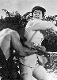

Also known as:Jing wu ying xiong 2: Tie bao biao (original title)
Country:United Kingdom, 90 minutes
Spoken languages:English, Mandarin
Genres:Action
Director(s):Tung-Min Chen, Robert Tai
Writer(s):George Tan
Video Codec:Unknown
Number: 286


Certification:
Storyline:
On returning from Japan, Chan Jun learns that the Japanese have hatched a plot to kill Dr. Sun Yat Sen. Together with his fellow students from the Ching Wu School, he foils the plot.
Cast: 


Medium: Original DVD,
Comments: Part of: Jet Fighter Jet Li 4 Film Set
Loaned: No
Aspect ratio: Unknown